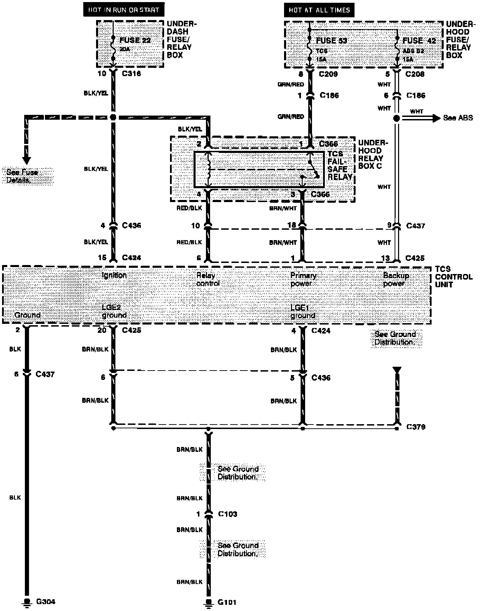
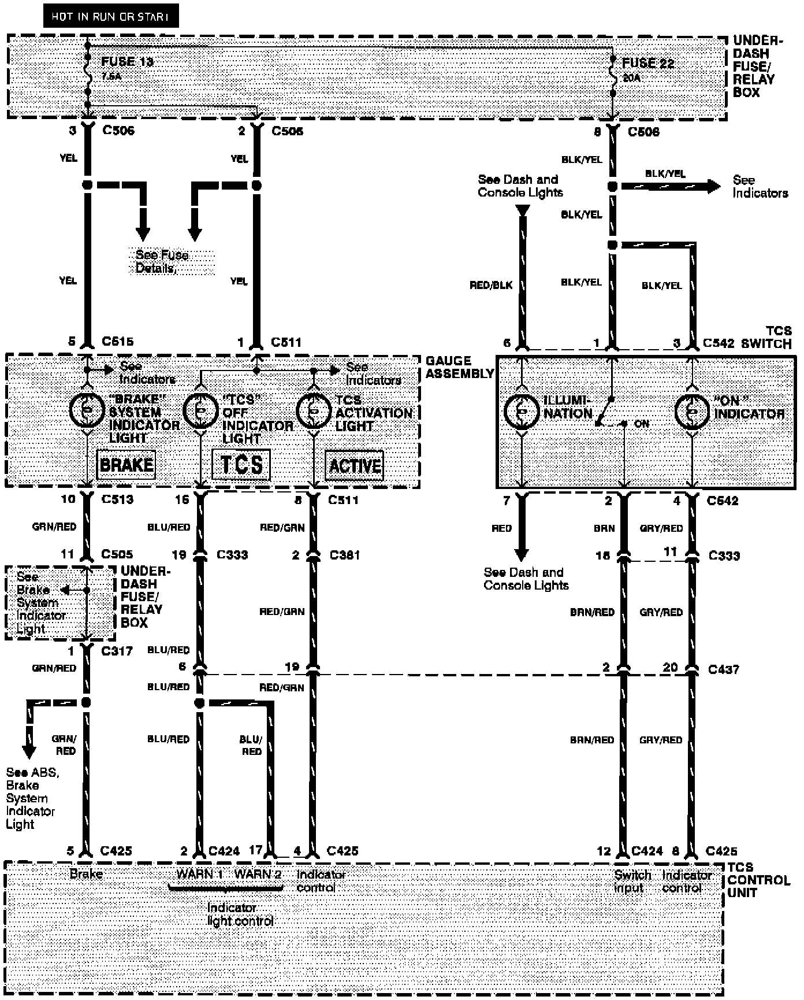
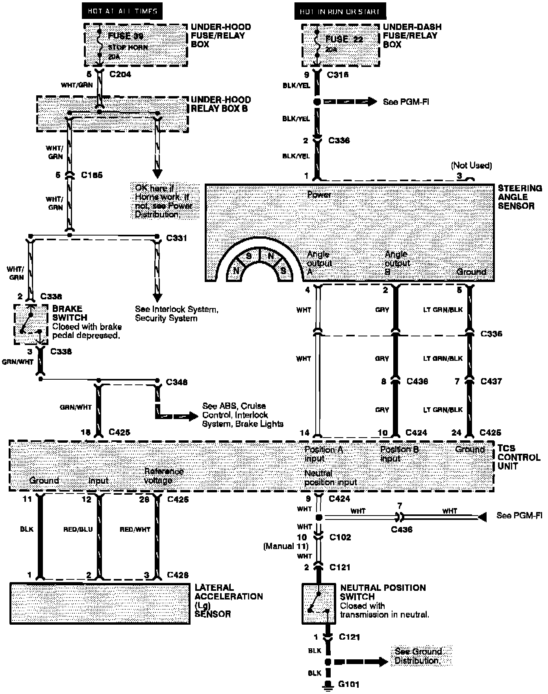
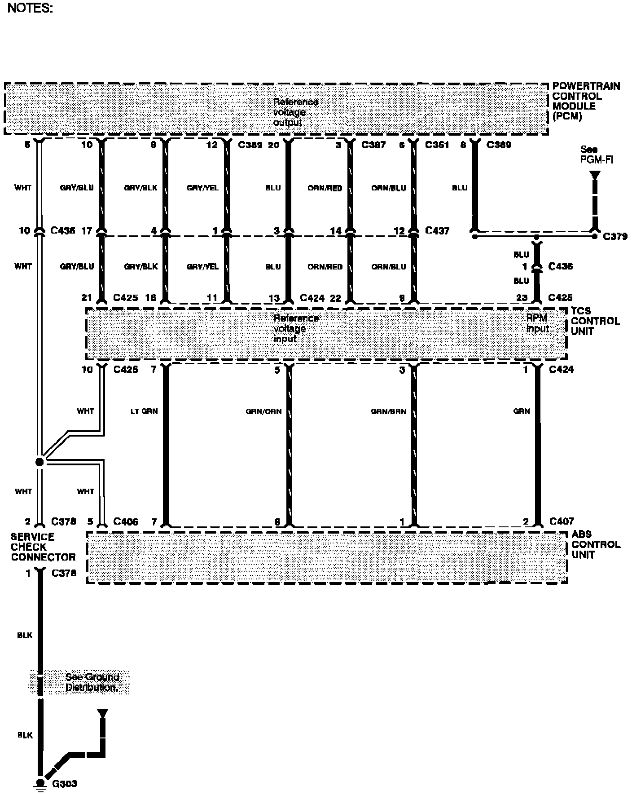
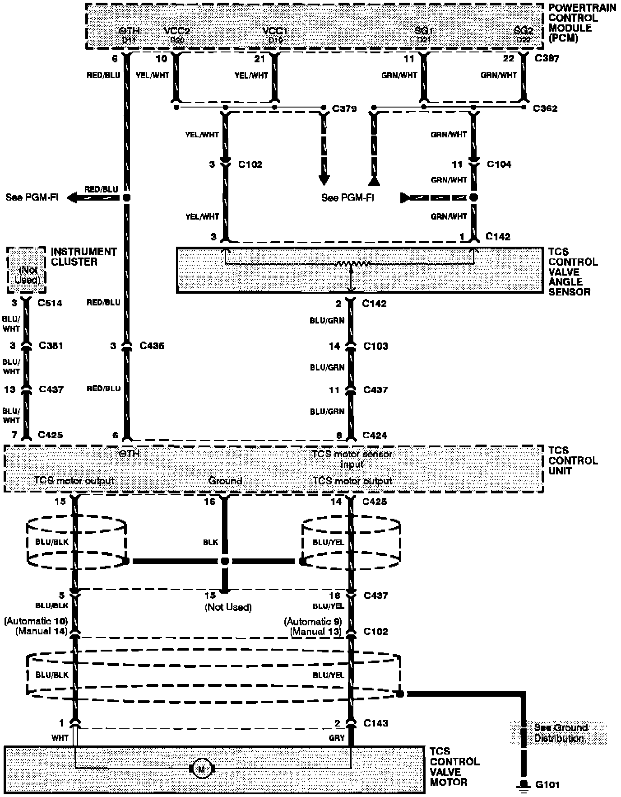

Traction Control System (TCS)
Traction Control System (TCS): Unit Power And Grounds:

Traction Control System (TCS): Indicators And TCS Switch:

Traction Control System (TCS): Switches And Sensors:

Traction Control System (TCS): Vehicle Speed Data And Service Check Connector:

Traction Control System (TCS): Control Valve Motor And Sensor:
